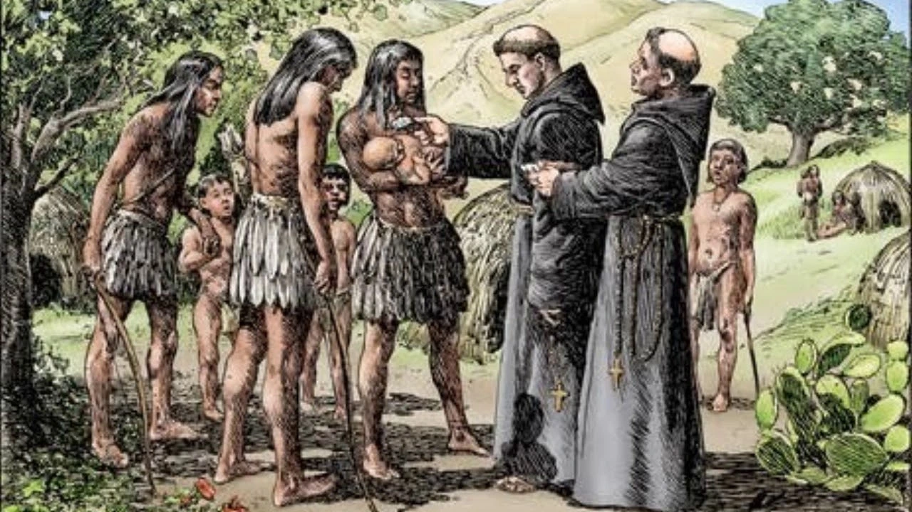

Portuguese Catholic priests' establishment of ministries in slaving ports during the Atlantic slave trade highlights the complex relationship between religion and the inhumanity of slavery. Aware of the deadly Middle Passage, these priests baptized tens of thousands of enslaved Africans. This act, while providing spiritual solace, also implicitly supported the slave trade. The priests' actions raise questions about the role of the Catholic Church in the moral dilemmas of slavery (many of these baptized individuals died before even boarding, and many more died during the passage), juxtaposing religious salvation against intense human suffering.
Religion In The Economy
Priests for the Middle Passage
In Latin America, the slave system intricately intertwined with Catholicism. Access to freedom and incorporation into the Catholic fold were pivotal aspects of this system. Catholicism played a dual role: on one hand, it offered a pathway to social integration; on the other, it functioned as a tool for control. The Church's influence permeated slave laws and practices, with baptism often serving as a prerequisite for manumission and legal rights. This integration of religious and secular life under Catholic doctrine significantly shaped the social dynamics of slavery in Latin America.
Religion In The Economy
Religious Slavery in Latin America
The encomienda system in Spanish America played a significant role in the spread and establishment of Catholicism among the indigenous populations. In this system, Spanish encomenderos were granted rights over certain native communities, ostensibly to protect them and teach them Christianity in return for labor. However, this system often led to severe exploitation and abuse. The encomenderos, while responsible for the spiritual wellbeing of their charges, frequently prioritized economic gain over religious instruction. The religious aspect of the encomienda system was thus characterized by a profound contradiction: while it facilitated the spread of Catholicism, it also often involved coercion and mistreatment, which contradicted the moral and ethical teachings of the religion itself. This paradox highlighted the complex dynamic between religious objectives and economic exploitation in the colonial system. This system was portrayed as a benevolent effort to civilize and ‘Christianize’ the native populations, masking the exploitation and abuse that remained underneath the surface.
Religion In The Economy
Religion in the Encomienda System
The Spanish strategy of using Catholic missions as bases for frontier defense in North America, exemplified by missions like San Antonio in 1718, represents a critical aspect of colonial expansion and religious conversion. These missions served dual purposes: as centers of faith and conversion for Native Americans and as strategic outposts for Spanish colonial interests. This approach highlights the connection between religious and imperial objectives in the Spanish colonization of the Americas.
Religion In The Economy
Catholic Missions for Frontier Defense
The Catholic Guarani culture in Paraguay presents a complex narrative of settler-native relations. The Jesuit missions, established in the 17th century, played a pivotal role in shaping Guarani society. These missions aimed to convert and protect the Guarani from enslavement, leading to a unique blend of Catholic and indigenous practices. The Guarani, initially resistant, gradually adopted Catholicism, integrating it with their traditional beliefs. This synthesis influenced social structures, arts, and even resistance strategies against colonial exploitation. The Jesuit-Guarani alliance, while fostering a distinct cultural identity, also became a point of contention with Spanish settlers and colonial authorities, culminating in the expulsion of Jesuits in 1767 and significant transformations in Guarani society.
Religion In The Economy
Catholic Guarani Culture in Paraguay
The aim of both the Church and state in enforcing conformity is a central theme in the history of Catholicism. This push for conformity was driven by the belief that religious uniformity was essential for social and political stability. The Church and state often collaborated to suppress dissent, viewing non-conformity as a threat to their authority. This approach led to various measures, including censorship, inquisition, and education reforms, to ensure adherence to Catholic doctrine and support for the state.
Religion In The Economy
Conformity in the Church and State
The experience of Catholicism in colonial Latin America varied significantly between urban centers like Lima and Mexico City and the rural countryside. In cities, Catholic practices and institutions were more prominently displayed and deeply entrenched, reflecting the close ties between colonial authorities and the Church. Rural areas, in contrast, often experienced a more syncretic form of Catholicism, blending indigenous beliefs and practices with orthodox Catholic rituals. This dichotomy illustrates the adaptability of Catholicism to different social and cultural contexts, as well as the challenges faced by the Church in maintaining doctrinal uniformity across diverse and often remote populations.
Religion In The Economy
Catholicism in the City vs Countryside
The Enlightenment period in Iberia saw a rise in educated reformers who, influenced by Enlightenment rationality and scientific principles, often found themselves at odds with the Catholic Church. Viewing the Church as an obstacle to progress and change, these reformers advocated for a more secular approach to governance and societal organization. This conflict between traditional religious authority and emerging Enlightenment ideals represents a significant cultural and intellectual shift in the Iberian world.
Religion In The Economy